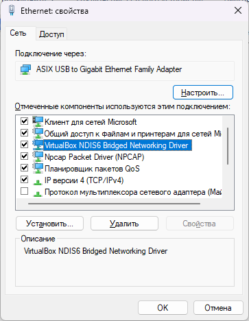

Прошу помочь с наводкой, куда копать. Ситуация следующая.
Установил чистую винду и запустил GbDPI, он отлично заработал. После чего установил драйвера и свой классический набор софта и GbDPI как прежде запускается, но на забл ресурсы не пускает.
При этом заметил очень странную вещь. Если запустить любую виртуальную машину в VirtualBox, то GbDPI начинает, о чудо, работать на основной машине (а также внутри виртуалки, если там запустить GbDPI). Посчитав, что проблема в VB, я его удалил, но это не помогло.
Начинай сначала. Установил винду, смотря ещё какую, проверил, установил дрова, проверил и так последовательно. Учитывай обновления которые могут прийти нежданно. Есть там один пункт, во всяком случаи в 7, так там написано, что некоторые обновления которые мы считаем важными устанавливаются без вашего ведома, ну то есть не важно, отключил их или нет, но любыми путями они всё равно установятся, а остальные не важные для них уже на ваше усмотрение. Я обычно перед установкой винды всегда отключаю провод, установил, сношу службу обновлений, настраиваю и только потом подключаю нэт, когда всё поставил и настроил, чтоб ничего без моего ведома не установилось. Сложно, ручная работа, но зато без неожиданностей.
Когда что то к примеру перестало работать, захожу на форум, нахожу что нужно поставить одно обновление, дальше читаю что оно из себя представляет, что бывает если его установить, не спешу с этим делом и только потом его скачиваю и устанавливаю в ручную, проверяю, ничего ли не изменилось в плохую сторону, тестирую неделю, а то и месяц и только потом ставлю на все остальные свои компы.
На свежих версиях винды, дрова приходят автоматом, а откуда вы знаете что в них и можете ли вы слепо доверять, поэтому дрова ставить надо от производителя, а не от майка, но если обновления работают, то любые манипуляции будут до одного места, оно придёт и перезапишет и всё что вы делали в ручную не будет иметь никакго значения
Спасибо за развернутый комментарий. Но, к сожалению, такой способ не подходит. Тратить ещё 3 дня на настройку системы под себя у меня нет (как и больше отпуска).
Система - Windows 11 лицуха со всеми последними обновами. Драйвера с сайта производителя ноута.
Дело в том, что за последние 2 недели ставил такую же лицуху ещё на 2 ноута и там всё прекрасно работает с моего вай-фая. Так что дело явно не в системе. Дело в софте или системных настройках.
А “прикол” с VirtualBox, когда лишь запуск виртуалки сразу даёт работать GbDPI, наводит на мысль, что дело в какой-то мелкой загвоздке, которую хотелось бы выяснить без переустановки системы.
Если ноут, проверь через провод. Очень часто проблема в сетевом драйвере и как правило чем старее драйвер, тем лучше, но опять же, обновления которые включены всё изменят, копилот, который внедрили в 11 изначально имеет полный достут и может самостоятельно удалять или изменять что не будь. Это интеллект, который работает в основном он лайн, подключённый к gpt майка. Сложно ведь всех мониторить в ручную, вот для этого придумали интеллект чтоб направлять вас на правильный по их мнению путь 
Может, у вас VirtualBox какую-нибудь сетевую службу запускал? Ну типо DHCP, DNS-клиент или что-нибудь в этом роде. Хотя по идее, не должно влиять…
через кабель и работает
ну вот да, интересно, что такое делает VB, что вдруг начинает работать
А в чем это проявляется? Какая ошибка? Или просто все висит?
я б на вашем месте установил заново VB, раз уж он помогает))
У меня он тоже кстати работает. А проверьте, не ставит ли он в вашем случае каких-нибудь своих сетевых драйверов? Может, какой-нибудь мост? или новый протокол в настройках сетевого подключения?
Просто висит, как и без GdDPI, при этом в остальной интернет пускает
VB установил, но держать постоянно запущенную виртуалку - такой себе костыль.
VB ставит свой сетевой адаптер для работы сети внутри виртуалок и ещё какие-то сетевые службы при установке. Неужели при удалении он за собой не все подчищает, при этом оставляя только то, что мешает работе GDPI.
Думаю, теоретически такое возможно. Посмотрите в службах - есть там что-нибудь от виртуалбокса? ну и в настройках сетевого подключения на всякий случай

Есть, отключал поочередно всё, вплоть до оставления одного ip 4. Ситуация не меняется.
Служба по умолчанию остановлена
А в “Программы и компоненты” есть этот Vbox networking driver? Можно его удалить отдельно от VBox? Просто у меня такого нет вообще. Или может где-то в настройках VBox отключить? Менеджер сетей или типа того.
Как вариант попробуй не отключать, а удалять компонент. Собственно virtualbox и npcap. У меня вообще с npcap (даже выключенным но не удалённым) рандомно перестаёт линк видеть, кабель не подключен пока не отключишь/включишь интерфейс 
Но до того, как что-то удалите, попробуйте еще вот что: запустите свою виртуалку, запомните время. Откройте “Просмотр событий”, найдите там в журналах windows Система или Приложение. И посмотрите по времени, не стартовали ли какие сетевые службы сразу после запуска виртуалки?
Правильно вот так
В “программах и комп-х” его нет, в VBox можно удалить, удаляется адаптер из сетевых подключений и GDPI вообще перестает работать, даже при запуске виртуалки.
В просмотре событий никакие сетевые службы не стартуют.
ncap удалил, он шёл вместе с wireshark - безрезультативно, поведение не меняется
сделал как у Вас - эффекта нет
Друзья, если кого-то заинтересовал мой случай, могу предоставить удаленный доступ и вместе поразбираемся. Только дайте знать, кому интересно 
Возможно, это будет интересно автору gdpi @ValdikSS ,но скорее всего нужен не удаленный доступ, а дамп трафика в wireshark Как сделать дамп трафика в Wireshark · ValdikSS/GoodbyeDPI Wiki · GitHub
Попробуй отключить сетевой адаптер Virtual Box в параметрах

{kind=link}
{kind=link}
У меня была похожая проблема с другим приложением (оно брало интернет из виртуалки) и помогло отключение всех сетевых адаптеров, кроме основного “Enternet”. При чем сетевые адаптеры сохраняются после удаления приложения (У меня давно нет VMWARE на пк, но адаптер остался). Скажи, если поможет
Попробуйте вместо VirtualBox использовать VMWare, он гораздо лучше и менее лагучий, может быть драйвера ВиртуалБокса куда-то трафик перенаправляют
UPD: не актуально, решение проблемы (как оказалось, массовой и возникшей сегодня) нашёл в других темах